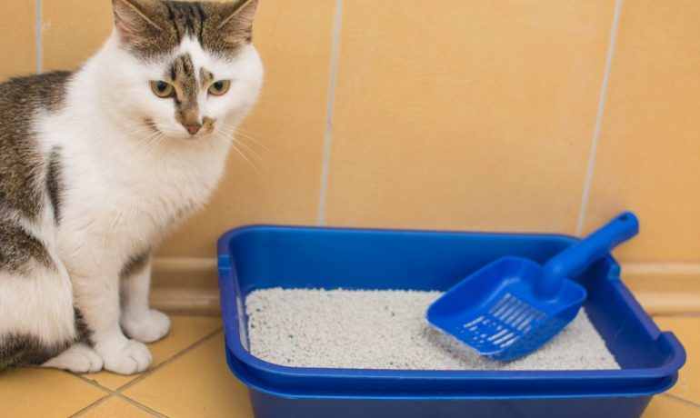

The Ultimate Guide to Cat Litter: Choosing the Best Option for Your Feline Friend

Choosing the right cat litter is more than just a convenience—it's a crucial part of keeping your feline friend happy and healthy. A well-maintained litter box promotes good hygiene, reduces unpleasant odors, and even influences your cat's behavior. However, with so many options available, selecting the best litter can feel overwhelming.
This guide breaks down the different types of cat litter, their pros and cons, and how to find the perfect match for your cat’s needs. Whether you're looking for eco-friendly alternatives, low-dust solutions, or maximum odor control, we've got you covered.
Why Choosing the Right Cat Litter Is So Important
Understanding the different types of litter can help you make the best choice for both you and, most importantly, your cat. Just like us, cats have preferences—scent, texture, odor control, and dust levels all play a role in whether or not they’ll use the litter box.
Cats are naturally clean animals and prefer a tidy environment. The wrong litter could lead to avoidance, meaning your cat might choose your rug over their box. Picking the right litter ensures your cat stays comfortable and maintains good litter box habits, making life easier for both of you. However, if your cat suddenly starts avoiding their litter box or having accidents, it’s important to consider other potential factors. They may dislike the litter box style, have changed their litter preference, or dislike its location. In some cases, this behavior may also indicate an underlying medical issue, so if the problem persists after adjusting their setup, consult a veterinarian to rule out health concerns.
Understanding the Different Types of Cat Litter
With so many cat litters available on the market it may become overwhelming and even exhausting to try to research the best type of litter. Let's discuss the different types of litter on the market, break down their pros and cons, and hopefully help you decide which litter is the best fit for you and most importantly one your cat enjoys!
Clumping Clay Litter
A popular choice due to its ease of use and odor control.
Pros:
Easy to scoop : Clumps solidify for quick removal.
Excellent odor control :Often contains deodorizers.
Widely available :Found in most stores.
Cons:
Dusty : Can irritate respiratory systems.
Not eco-friendly : Made from strip-mined clay.
May Contain Chemicals : Most clumping litters add fragrance (harmful chemicals) to help with odors, opt for fragrance free options
Risks and Considerations:
Kittens may ingest clumps, causing blockages.
Can track onto paws, leading to accidental ingestion.
Dust may worsen asthma or respiratory issues.
Non-Clumping Clay Litter
Absorbs moisture but requires frequent replacement.
Pros:
Absorbs moisture well : Keeps the box dry.
Budget-friendly :More affordable than clumping or specialty litters.
Cons:
Needs frequent changing :Urine spreads throughout the litter.
Less odor control : Ammonia smells build up faster.
Eco-friendly alternatives with varying performance.
Pros:
Environmentally friendly : Sustainable and biodegradable.
Low dust :Better for respiratory health.
Some options are flushable :Convenient disposal.
Cons:
Clumping varies : Some types don’t form solid clumps.
Can be pricey : Often more expensive than clay.
Odor control varies : Effectiveness depends on the material.
Risks and Considerations:
Some cats may dislike the texture or scent.
Mold risk – Organic materials like corn and wheat can grow mold if not changed frequently.
Texture - Some cats with sensitive paws may not like the textures
Pine Pellet Litter
Pine litter is eco-friendly, low-dust, and naturally controls odors.
Pros:
Eco-Friendly : Made from recycled wood, pine pellets are biodegradable.
Affordable :More cost-effective compared to traditional litters.
Low Dust :Produces minimal dust, making it a great option for cats and owners with allergies.
Cons:
Texture Discomfort : Some cats may find the rough texture uncomfortable.
No Clumping : Non-clumping pellets make cleaning more challenging and require more frequent changes.
Potential Irritation : The strong pine scent may cause irritation in sensitive cats.
Risks and Considerations:
Pine pellets can cause skin and respiratory irritation in some cats.
They may attract insects if not stored or disposed of properly.
Requires frequent replacement, similar to non-clumping and crystal litter.
How to Choose the Right Litter for Your Cat
Selecting the best litter for your cat involves considering various factors, including your cat's preferences, health concerns, odor control needs, ease of cleaning, and environmental impact.
Factors to Consider When Choosing The Right Litter
Cat Preference : Some cats are particular about texture, scent, or clumping ability. If your cat refuses to use a new litter, it may be due to discomfort or an aversion to its feel or smell.
Health Concerns : If your cat (or household members) has asthma or allergies, low-dust options like silica gel, paper, or pine litter may be better choices. Clumping clay litter can be dusty and may aggravate respiratory issues.
Odor Control : If strong odors are a concern, clumping clay, silica gel, or certain natural litters (such as pine or coconut) provide good odor absorption. However, some natural litters may require more frequent changes.
Ease of Cleaning : Clumping litter simplifies waste removal, while non-clumping and pellet-based litters may need full replacements more often.
Environmental Impact : If sustainability is a priority, biodegradable options like corn, wheat, wood, or paper litters reduce landfill waste compared to clay-based alternatives, which require strip mining.